You are walking out of the supermarket. As you approach your car, a stranger calls out, “Hey! Funny weather today!” With a due sense of caution—is she a global warming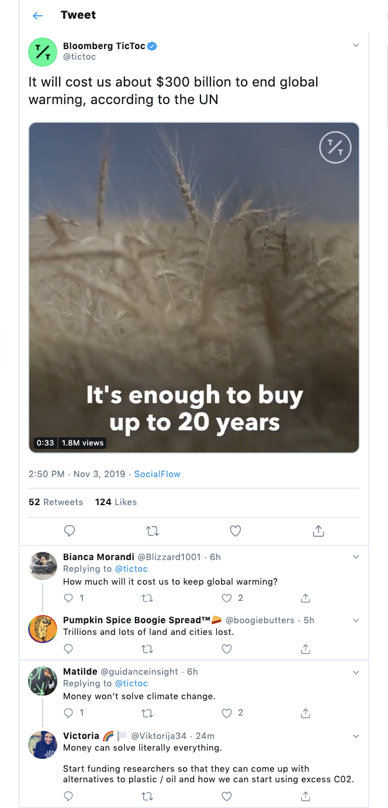 denier or not?—you reply yes. There is a slight hesitation. Is it because she is thinking of saying something about global warming? In any case, the hesitation induced you to think of it. Congratulations: you are living proof that you have entered the time of hyperobjects. Why? You can no longer have a routine conversation about the weather with a stranger. The presence of global warming looms into the conversation like a shadow, introducing strange gaps. Or global warming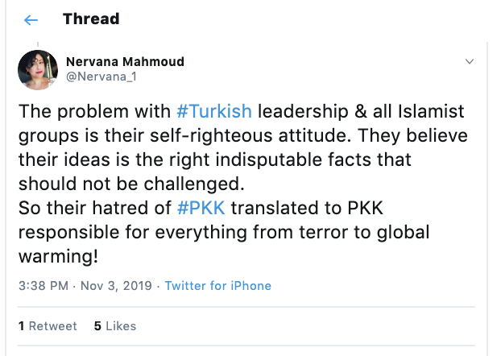 is spoken or—either way the reality is strange.
A hyperobject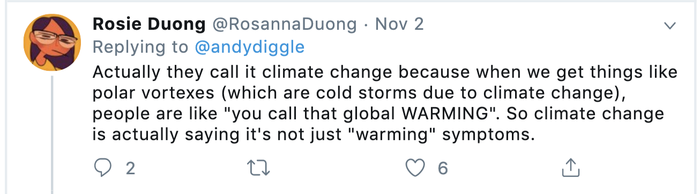 has ruined the weather conversation, which functions as part of a neutral screen that enables us to have a human drama in the foreground. In an age of global warming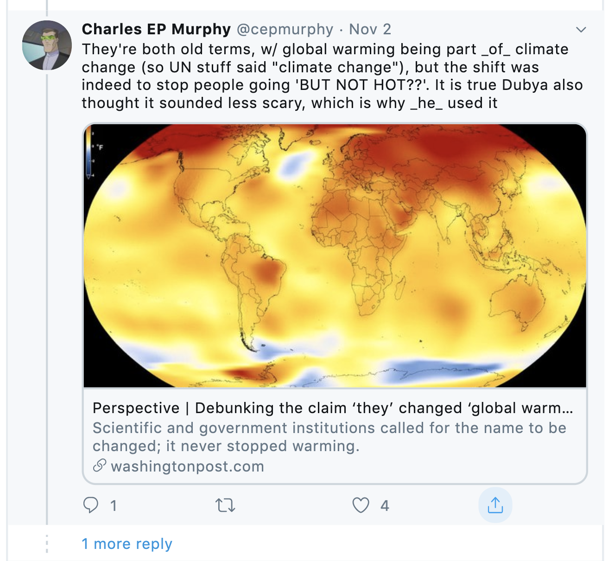, there is no background, and thus there is no foreground. It is the end of the world, since worlds depend on backgrounds and foregrounds. World is a fragile aesthetic effect around whose corners we are beginning to see. True planetary awareness is the creeping realization not that “We Are the World,” but that we aren’t.
Why? Because world and its cognates—environment, Nature—are ironically more objectified than the kinds of “object” I am talking about in this study. World is more or less a container in which objectified things float or stand. It doesn’t matter very much whether the movie within the context of world is an old-fashioned Aristotelian movie of substances decorated with accidents; or whether the movie is a more avant-garde Deleuzian one of flows and intensities. World as the background of events is an objectification of a hyperobject: the biosphere, climate, evolution, capitalism (yes, perhaps economic relations compose hyper-objects). So when climate starts to rain on our head, we have no idea what is happening. It is easy to practice denial in such a cognitive space: to set up, for example, “debates” in which different “sides” on global warming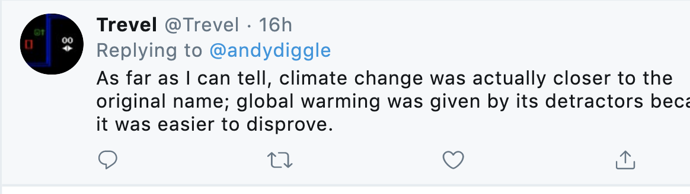 are presented. This taking of “sides” correlates all meaning and agency to the human realm, while in reality it isn’t a question of sides, but of real entities and human reactions to them. Environmentalism seems to be talking about something that can’t be seen or touched. So in turn environmentalism ups the ante and preaches the coming apocalypse. This constant attempt to shock and dismay inspires even more defiance on the opposite side of the “debate.”
Both sides are fixated on world, just as both sides of the atheism debate are currently fixated on a vorhanden (“present at hand”), objectively present God. As irritating for New Atheists such as Richard Dawkins to hear that atheism is just another form of belief, it nevertheless is—or at any rate, it holds exactly the same belief about belief as the fundamentalists. Belief is a token, a mental object that you grip as hard as possible, like your wallet or car keys. In exactly the same way, it is annoying for environmentalists to talk about ecology without Nature. The argument is heard as nihilism or postmodernism. But really it is environmentalism that is nihilist and postmodernist, just as fundamentalism’s belief about belief marks it as a form of ontotheological nihilism. The ultimate environmentalist argument would be to drop the concepts Nature and world, to cease identifying with them, to swear allegiance to coexistence with nonhumans without a world, without some nihilistic Noah’s Ark.
In any weather conversation, one of you is going to mention global warming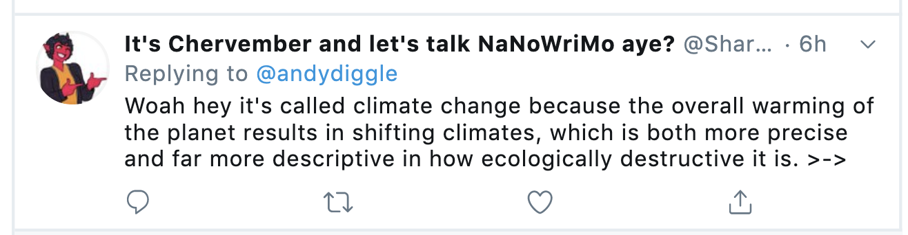 at some point. Or you both decide not to mention it but it looms over the conversation like a dark cloud, brooding off the edge of an ellipsis.1 This failure of the normal rhetorical routine, these remnants of shattered conversation lying around like broken hammers (they must take place everywhere), is a symptom of a much larger and deeper ontological shift in human awareness. And in turn, this is a symptom of a profound upgrade of our ontological tools. As anyone who has waited while the little rainbow circle goes around and around on a Mac, these upgrades are not necessarily pleasant. It is very much the job of philosophers and other humanities scholars to attune ourselves to the upgrading process and to help explain it.
What is the upgrading process? In a word, the notion that we are living “in” a world—one that we can call Nature—no longer applies in any meaningful sense, except as nostalgia or in the temporarily useful local language of pleas and petitions. We don’t want a certain species to be farmed to extinction, so we use the language of Nature to convince a legislative body. We have a general feeling of ennui and malaise and create nostalgic visions of hobbit-like worlds to inhabit. These syndromes have been going on now since the Industrial Revolution began to take effect.
As a global warming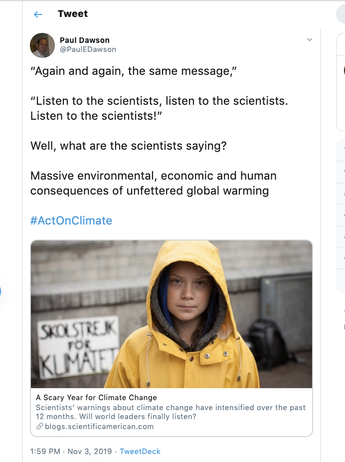 of that revolution, however, something far bigger and more threatening is now looming on our horizon—looming so as to abolish our horizon, or any horizon. global warming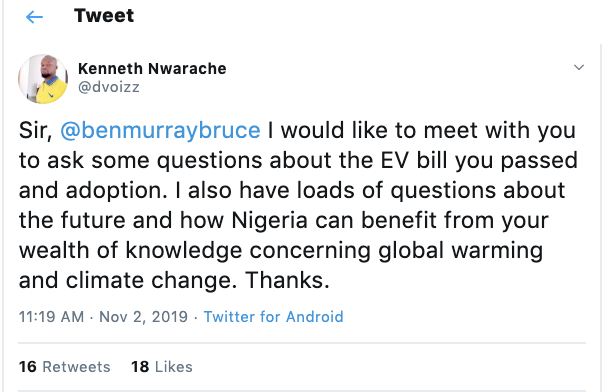 has performed a radical shift in the status of the weather. Why? Because the world as such—not just a specific idea of world but world in its entirety—has evaporated. Or rather, we are realizing that we never had it in the first place.
We could explain this in terms of the good old-fashioned Aristotelian view of substance and accidents. For Aristotle, a realist, there are substances that happen to have various qualities or accidents that are not intrinsic to their substantiality. In section Epsilon 2 of the Metaphysics Aristotle outlines the differences between substances and accidents. What climate change 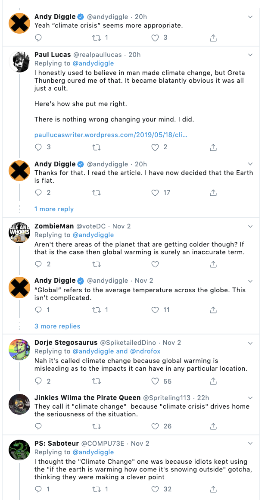 has done is shift the weather from accidental to substantial. Aristotle writes, “Suppose, for instance, that in the season of the Cynosure [the Dog Days of summer] arctic cold were to prevail, this we would regard as an accident, whereas, if there were a sweltering heatwave, we would not. And this is because the latter, unlike the former, is always or for the most part the case.”2 But these sorts of violent changes are exactly what global warming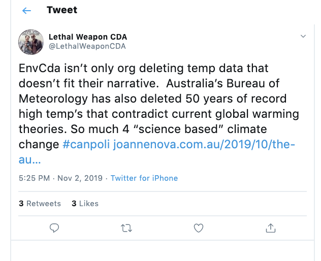 predicts. So every accident of the weather becomes a potential symptom of a substance, global warming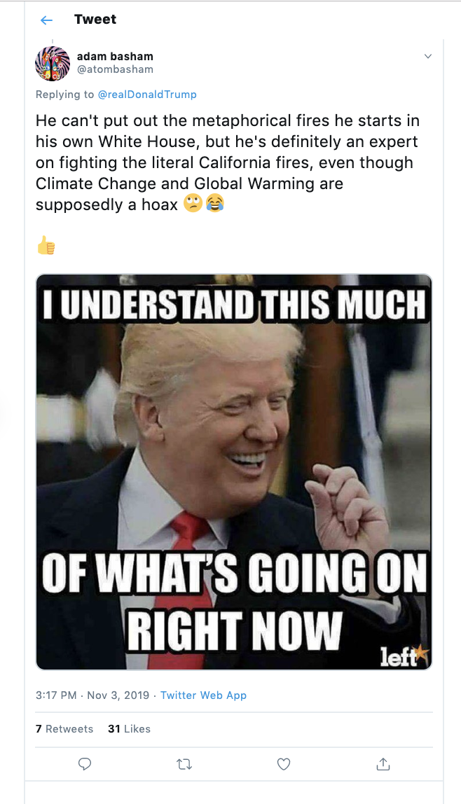. All of a sudden this wet stuff falling on my head is a mere feature of some much more sinister phenomenon that I can’t see with my naked human eyes. I need terabytes of RAM to model it in real time (this has been available for about ten years).
There is an even spookier problem arising from Aristotle’s arctic summer idea. If those arctic
summers continue, and if we can model them as symptoms of global warming, then there never was a
genuine, meaningful (for us humans) sweltering summer, just a long period of sweltering that seemed
real because it kept on repeating for, say, two or three millennia. Global warming plays a very mean
trick. It reveals that what we took to be a reliable world was actually just a habitual pattern—a
collusion between forces such as sunshine and moisture and humans expecting such things at certain
regular intervals and giving them names, such as Dog Days. We took weather to be real. But in an age
of global warming we see it as an accident, a simulation of something darker, more withdrawn—
climate.As Harman argues, world is always presence-at-hand—a mere caricature of some real
object.3
and moisture and humans expecting such things at certain
regular intervals and giving them names, such as Dog Days. We took weather to be real. But in an age
of global warming we see it as an accident, a simulation of something darker, more withdrawn—
climate.As Harman argues, world is always presence-at-hand—a mere caricature of some real
object.3
Now let’s think the evaporation of world from the point of view of foreground and background. A weather conversation provides a nice background to our daily affairs, nice to the extent that we don’t pay too much attention to it. Precisely for it to be a background, it has to operate in our peripheral vision. Thus, the conversation about the weather with a stranger is a safe way to acknowledge our coexistence in social space. It’s “phatic,” according to Roman Jakobson’s six-part model of communication; that is, it draws attention to the material medium in which the communication is occurring.4 Likewise, the weather as such is a background phenomenon. It might loom distressingly into the foreground as a tornado or as a drought, but most often those are temporary affairs—there is a larger temporal backdrop against which they seem to occur as isolated incidents.
Now what happens when global warming enters the scene? The background ceases to be a background, because we have started to observe it. Strange weather patterns and carbon emissions caused scientists to start monitoring things that at first only appeared locally significant. That’s the old definition of climate: there’s the climate in Peru, the climate on Long Island, and so on. But climate in general, climate as the totality of derivatives of weather events—in much the same way as inertia is a derivative of velocity—is a beast newly recognized via the collaboration of weather, scientists, satellites, government agencies, and other entities. This beast includes the sun, since it’s infrared heat from the sun that is trapped by the greenhouse effect of gases such as CO2. So global warming is a colossal entity that includes entities that exist way beyond Earth’s atmosphere, and yet it affects us intimately, right here and now. Global warming covers the entire surface of Earth, and 75 percent of it extends five hundred years into the future. Remember what life was like in the early 1500s?
Global warming is really here—even more spookily, it was already here, already influencing the supposedly real wet stuff falling on my head and the warm golden stuff burning my face at the beach. That wet stuff and that golden stuff, which we call weather, turns out to have been a false immediacy, an ontic pseudo-reality that can’t stand up against the looming presence of an invisible yet far more real global climate. Weather, that handy backdrop for human lifeworlds, has ceased to exist, and along with it, the cozy concept of lifeworld itself. Lifeworld was just a story we were telling ourselves on the inside of a vast, massively distributed hyperobject called climate, a story about how different groups were partitioned according to different horizons—concepts now revealed as ontic prejudices smuggled into the realm of ontology. Global warming is a big problem, because along with melting glaciers it has melted our ideas of world and worlding. Thus, the tools that humanists have at their disposal for talking about the ecological emergency are now revealed, by global warming itself, to be as useless as the proverbial chocolate teapot. It is rather like the idea of using an antique (or better, antiqued) Christmas ornament as a weapon.
The spooky thing is, we discover global warming precisely when it’s already here. It is like realizing that for some time you had been conducting your business in the expanding sphere of a slowmotion nuclear bomb. You have a few seconds for amazement as the fantasy that you inhabited a neat, seamless little world melts away. All those apocalyptic narratives of doom about the “end of the world” are, from this point of view, part of the problem, not part of the solution. By postponing doom into some hypothetical future, these narratives inoculate us against the very real object that has intruded into ecological, social, and psychic space. As we shall see, the hyperobject spells doom now, not at some future date. (Doom will assume a special technical meaning in this study in the “Hypocrisies” section.)
If there is no background—no neutral, peripheral stage set of weather, but rather a very visible, highly monitored, publicly debated climate—then there is no foreground. Foregrounds need backgrounds to exist. So the strange effect of dragging weather phenomena into the foreground as part of our awareness of global warming has been the gradual realization that there is no foreground! The idea that we are embedded in a phenomenological lifeworld, tucked up like little hobbits into the safety of our burrow, has been exposed as a fiction. The specialness we granted ourselves as unravelers of cosmic meaning, exemplified in the uniqueness of Heideggerian Dasein, falls apart since there is no meaningfulness possible in a world without a foreground–background distinction. Worlds need horizons and horizons need backgrounds, which need foregrounds. When we can see everywhere (when I can use Google Earth to see the fish in my mom’s pond in her garden in London), the world—as a significant, bounded, horizoning entity—disappears. We have no world because the objects that functioned as invisible scenery have dissolved.5
World is an aesthetic effect based on a blurriness and aesthetic distance. This blurriness derives from ignorance concerning objects. Only in ignorance can objects act like blank screens for the projection of meaning. “Red sky at night, shepherd’s delight” is a charming old saw that evokes days when shepherds lived in worlds bounded by horizons on which things such as red sunsets occurred. The sun goes down, the sun comes up—of course now we know it doesn’t: Galileo and Copernicus tore holes in that notion of world. Likewise, as soon as humans know about climate, weather becomes a flimsy, superficial appearance that is a mere local representation of some much larger phenomenon that is strictly invisible. You can’t see or smell climate. Given our brains’ processing power, we can’t even really think about it all that concretely. At the very least, world means significantly less than it used to—it doesn’t mean “significant for humans” or even “significant for conscious entities.”
A simple experiment demonstrates plainly that world is an aesthetic phenomenon. I call it The Lord of the Rings vs. the Ball Popper Test. For this experiment you will need a copy of The Two Towers, the second part of director Peter Jackson’s Lord of the Rings trilogy.6 You will also require a Playskool Busy Ball Popper, made by Hasbro. Now play the scene that I consider to be the absolute nadir of horror, when Frodo, captured by Faramir, is staggering around the bombed-out city Osgiliath when a Nazgul (a ringwraith) attacks on a “fell beast,” a terrifying winged dragon-like creature.
Switch on the Ball Popper. You will notice the inane tunes that the Popper plays instantly undermine the coherence of Peter Jackson’s narrative world.
The idea of world depends on all kinds of mood lighting and mood music, aesthetic effects that by definition contain a kernel of sheer ridiculous meaninglessness. It’s the job of serious Wagnerian worlding to erase the trace of this meaninglessness. Jackson’s trilogy surely is Wagnerian, a total work of art (Gesamtkunstwerk) in which elves, dwarves, and men have their own languages, their own tools, their own architecture, done to fascist excess as if they were different sports teams. But it’s easy to recover the trace of meaninglessness from this seamless world—absurdly easy, as the toy experiment proves. In effect, this stupid kids’ toy “translated” the movie, clashing with it and altering it in its own limited and unique way.
Objections to wind farms and solar arrays are often based on arguments that they “spoil the view.”7 The aesthetics of Nature truly impedes ecology, and a good argument for why ecology must be without Nature. How come a wind turbine is less beautiful than an oil pipe? How come it “spoils the view” any more than pipes and roads? You could see turbines as environmental art. Wind chimes play in the wind; some environmental sculptures sway and rock in the breeze. Wind farms have a slightly frightening size and magnificence. One could easily read them as embodying the aesthetics of the sublime (rather than the beautiful). But it’s an ethical sublime, one that says, “We humans choose not to use carbon”—a choice visible in gigantic turbines. Perhaps it’s this very visibility of choice that makes wind farms disturbing: visible choice, rather than secret pipes, running under an apparently undisturbed “landscape” (a word for a painting, not actual trees and water). As a poster in the office of Mulder in the television series The X-Files says, “The Truth Is Out There.” Ideology is not just in your head. It’s in the shape of a Coke bottle. It’s in the way some things appear “natural”— rolling hills and greenery—as if the Industrial Revolution had never occurred, and moreover, as if agriculture was Nature. The “landscape” look of agriculture is the original “greenwashing.” Objectors to wind farms are not saying “Save the environment!” but “Leave our dreams undisturbed!” World is an aesthetic construct that depends on things like underground oil and gas pipes. A profound political act would be to choose another aesthetic construct, one that doesn’t require smoothness and distance and coolness. World is by no means doing what it should to help ecological criticism. Indeed, the more data we have, the less it signifies a coherent world.
World is a function of a very long-lasting and complex set of social forms that we could roughly call the logistics of agriculture. New Zealand is an astonishing place where there are fifteen sheep for every human, a hyperbolic blowup of the English Lake District. It was deliberately manufactured that way. World is not just an idea in your head. It’s in the way the fields roll toward a horizon, on top of which a red setting sun augurs peace and contentment. It’s in the smooth, lawn-like texture of sheepnibbled grass: “First the labourers are driven from the land, and then the sheep arrive.”8 Wind farms are an eyesore on this aestheticized landscape. Agriculture, in this view, is an ancient technological world-picture, to use Heidegger’s terms: a form of framing that turns reality into so much stuff on tap (Bestand).9 Agriculture is a major contributor to global warming, not just because of flatulent cows, but because of the enormous technical machinery that goes into creating the agricultural stage set, the world. Perhaps the solution to this is suggested by the kinds of “perverse” technologies developed by pot farmers: to create intensive growth in a small space. Just as the porn industry accelerated the development of the Internet, so the drug industry might be our ecological savior. Stranger things have happened. Preserving the agricultural world picture just as it is, however, has already become a costly disaster.
To return to an example close to New Zealand’s heart, The Lord of the Rings presents an agricultural landscape that never explains itself. Sure, the Rangers such as Aragorn protect it. But how does it work? For whom and with whom is the growing and the harvesting and the selling done? Hobbiton is constructed to induce nostalgia for a suburban future that thinks itself as a Georgic idyll. To do so requires all kinds of lighting, rendering, and mood music—it also requires the threats of Mordor and orcs that make us care about bland suburbia. Just changing the Wagnerian music would destroy its delicate “balance.”
Village Homes is a world-like real illusion that rests in the northwest area of Davis, California. Each street is named after a place or person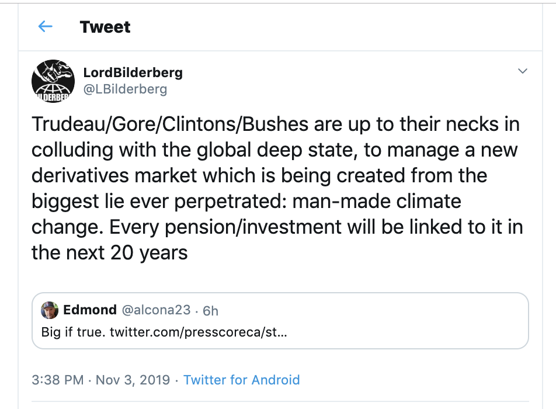 in The Lord of the Rings: Evenstar Lane, Bombadil Lane. The streets are concentric yet nontopologically equivalent, so there is a real feeling of being lost in there. There are vineyards and pomegranate trees. There is a village-green-like space with an amphitheater built into the grass. There is a children’s day care called Rivendell. It is all very beautiful; it’s very well done. There is already a nostalgia for the present there, not simply for Tolkien, but for an ecological vision of the 1970s when Village Homes was designed. There is one slight problem: you have to have an awful lot of money to live there. And there is a rule that you have to work in the collective allotments. As a friend quipped, “One homeowner’s association to rule them all.”
There are many reasons why, even if world were a valid concept altogether, it shouldn’t be used as the basis for ethics. Consider only this: witch ducking stools constitute a world just as much as hammers. There was a wonderful world of witch ducking in the Middle Ages in which witches were “discovered” by drowning them, strapped to an apparatus that submerged them in the local stream: if the supposed witch didn’t drown, she was a witch—and should thus be burned at the stake. Witch ducking stools constituted a world for their users in every meaningful sense. There is a world of Nazi regalia. Just because the Nazis had a world, doesn’t mean we should preserve it. So the argument that “It’s good because it constitutes a world” is flimsy at best. The reason not to interfere with the environment because it’s interfering with someone’s or something’s world is nowhere near a good enough reason. It might even have pernicious consequences. World and worlding are a dangerously weak link in the series of late-Heideggerian concepts.10 It is as if humans are losing both their world and their idea of world (including the idea that they ever had a world) at one and the same time, a disorienting fact. In this historical moment, working to transcend our notion of world is important. Like a mannerist painting that stretches the rules of classicism to a breaking point, global warming has stretched our world to breaking point. Human beings lack a world for a very good reason: because no entity at all has a world, or as Harman puts it, “There is no such thing as a ‘horizon.’”11 The “world” as the significant totality of what is the case is strictly unimaginable, and for a good reason: it doesn’t exist.
What is left if we aren’t the world? Intimacy. We have lost the world but gained a soul—the entities that coexist with us obtrude on our awareness with greater and greater urgency. Three cheers for the so-called end of the world, then, since this moment is the beginning of history, the end of the human dream that reality is significant for them alone. We now have the prospect of forging new alliances between humans and non-humans alike, now that we have stepped out of the cocoon of world.
About six minutes into Pierre Boulez’s piece Répons, the percussive instruments come in. They surround the smoother instruments (brass, strings), which are playing in a square in the center of the concert hall. The percussive instruments (piano, dulcimer, harp, and so on) are processed through various delays and filters. The sound of their entry is now evocative of speculative realism: the sound of a vaster world bursting into the human, or the reverse, the sound of a trapdoor opening in a plane, or the plane itself disappearing so we find ourselves in the wide blue sky. A terrifying, wonderful sound, the Kantian sublime of inner freedom giving way to a speculative sublime of disturbing intimacy. The sound of the end of the world but not an apocalypse, not a predictable conclusion. The sound of something beginning, the sound of discovering yourself inside of something. Boulez himself probably thought Répons was about the sound of modern human technology, Gesellschaft (modern “society”) impinging on Gemeinschaft (the “organic community”), and so forth. Or the idea of a dialogue between equal partners, a dialectical play between the organic and electronic. The piece is much more that that. It’s the sound of real entities appearing to humans. But as I’ve been arguing, real nonhuman entities appear to humans at first as blips on their monitors. But they are not those blips. The sound of a higher-dimensional configuration space impinging on extreme Western music (total serialism). The sound of hyperobjects. The sound of a nonmusic. Listen to the very end: the sound echoes and reverberates, repeating glissandos; then, suddenly, it’s over. No fade out. Robert Cahen captures it well in his deceptively simple film of Répons, visualizing the “human sounds” as a traditional orchestral ensemble juxtaposed with revolving and panning shots of trees, and the percussive sounds as humans mediated by a luminous ocean.12 When the percussive instruments enter, the camera on the orchestra pans back to reveal them surrounding the other players, and we see the studio lighting rig, as if the structures that hold the fragile fiction of world together have evaporated. Just as most of Earth’s surface is water, the sonic space is surrounded by the chilling, sparkling sounds of piano, harp, and glockenspiel.
Instead of trying constantly to tweak an illusion, thinking and art and political practice should simply relate directly to nonhumans. We will never “get it right” completely. But trying to come up with the best world is just inhibiting ecological progress. Art and architecture in the time of hyperobjects must (automatically) directly include hyperobjects, even when they try to ignore them. Consider the contemporary urge to maximize throughput: to get dirty air flowing with air conditioners. Air conditioning is now the benchmark of comfort; young Singaporeans are starting to sweat out of doors, habituated to the homogeneous thermal comfort of modern buildings.13 Such architecture and design is predicated on the notion of “away.” But there is no “away” after the end of the world. It would make more sense to design in a dark ecological way, admitting our coexistence with toxic substances we have created and exploited. Thus, in 2002 the architectural firm R&Sie designed Dusty Relief, an electrostatic building in Bangkok that would collect the dirt around it, rather than try to shuffle it somewhere else (Figures 11 and 12).14 Eventually the building would be coated with a gigantic fur coat of dirt.15
Such new ideas are counterintuitive from the standpoint of regular post-1970s environmentalism. Process relationism has been the presiding deity of this thinking, insofar as it thinks flows are better than solids. But thinking this way on a planetary scale becomes absurd. Why is it better to stir the shit around inside the toilet bowl faster and faster rather than just leaving it there? Monitoring, regulating, and controlling flows: Is ecological ethics and politics just this? Regulating flows and sending them where you think they need to go is not relating to nonhumans. Regulation of flows is just a contemporary mode of window dressing of the substances of ontotheological nihilism, the becomings and processes with which Nietzsche wanted to undermine philosophy.
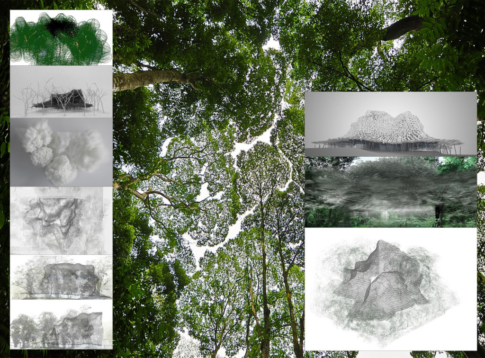FIGURE 11. New Territories/R&Sie, Dusty Relief (2002). By François Roche, Stephanie Lavaux, and Jean Navarro. Contemporary architecture and design is thinking beyond models based on vectors and flow. When one considers Earth or the biosphere as a whole, pushing pollution “somewhere else” is only redistributing it, sweeping it under the carpet. Reproduced by permission.
The common name for managing and regulating flows is sustainability.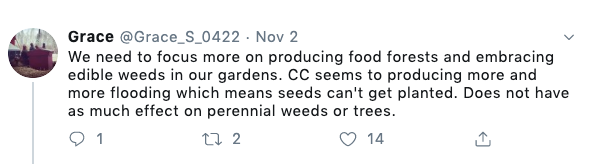 But what exactly is being sustained? “Sustainable capitalism”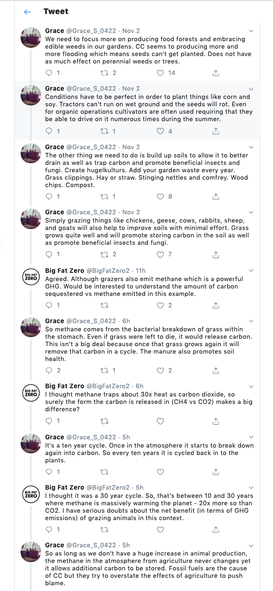/ might be one of those contradictions in terms along the lines of “military intelligence.”16 Capital must keep on producing more of itself in order to continue to be itself. This strange paradox is fundamentally, structurally imbalanced. Consider the most basic process of capitalism: the turning of raw materials into products. Now for a capitalist, the raw materials are not strictly natural. They simply exist prior to whatever labor process the capitalist is going to exert on them. Surely here we see the problem. Whatever exists prior to the specific labor process is a lump that only achieves definition as valuable product once the labor has been exerted on it.
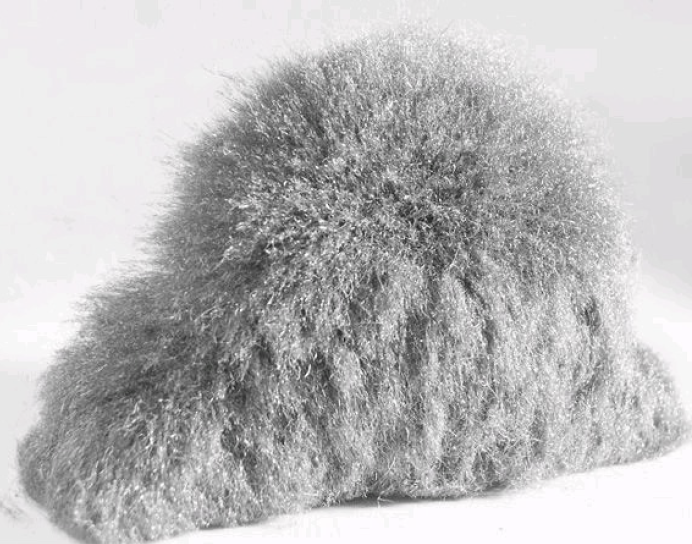FIGURE 12. New Territories/R&Sie, Dusty Relief (2002). By François Roche, Stephanie Lavaux, and Jean Navarro. An electrostatic building attracts pollution rather than redistributing it. The proposed building is an art gallery, speaking to ways in which care for hyperobjects is now redefining the aesthetic. Reproduced by permission.
What capitalism makes is some kind of stuff called capital. The very definition of “raw materials” in economic theory is simply “the stuff that comes in through the factory door.” Again, it doesn’t matter what it is. It could be sharks or steel bolts. At either end of the process we have featureless chunks of stuff—one of those featureless chunks being human labor. The point is to convert the stuff that comes in to money. Industrial capitalism is philosophy incarnate in stocks, girders, and human sweat. What philosophy? If you want a “realism of the remainder,” just look around you. “Realism of the remainder” means that yes, for sure, there is something real outside of our access to it—but we can only classify it as an inert resistance to our probing, a grey goo, to adapt a term suggested by thinking about nanotechnology—tiny machines eating everything until reality becomes said goo.
It’s no wonder that industrial capitalism has turned the Earth into a dangerous desert. It doesn’t really care what comes through the factory door, just as long as it generates more capital. Do we want to sustain a world based on a philosophy of grey goo? (Again, the term that some futurologists use to describe the nightmare of nanoscale robots mashing everything up into a colorless morass.) Nature is the featureless remainder at either end of the process of production. Either it’s exploitable stuff, or value-added stuff. Whatever it is, it’s basically featureless, abstract, grey. It has nothing to do with nematode worms and orangutans, organic chemicals in comets and rock strata. You can scour the earth, from a mountaintop to the Marianas Trench. You will never find Nature. It’s an empty category looking for something to fill it.
Rather than only evaporating everything into a sublime ether (Marx via Macbeth: “All that is solid melts into air”), capitalism also requires and keeps firm long-term inertial structures such as families, as Fernand Braudel explored.17 The Koch brothers and GE are two contemporary examples. One part of capital, itself a hyperobject, is its relentless revolutionizing of its mode of production. But the other part is tremendous inertia. And the tremendous inertia happens to be on the side of the modern. That is, the political ontology in which there is an “away.” But there is no “away” in the time of hyperobjects.
Capitalism did away with feudal and prefeudal myths such as the divine hierarchy of classes of people. In so doing, however, it substituted a giant myth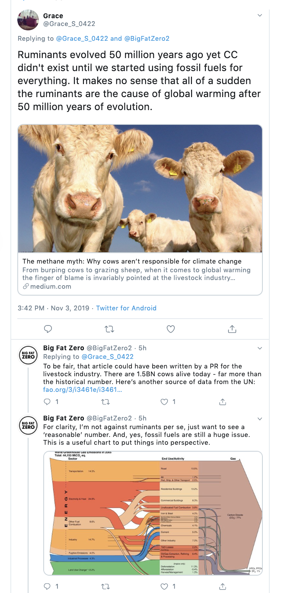 of its own: Nature. Nature is precisely the lump that exists prior to the capitalist labor process. Heidegger has the best term for it: Bestand (standing reserve). Bestand means “stuff,” as in the ad from the 1990s, “Drink Pepsi: Get Stuff.” There is an ontology implicit in capitalist production: materialism as defined by Aristotle. This specific form of materialism is not fascinated with material objects in all their manifold specificity. It’s just stuff. This viewpoint is the basis of Aristotle’s problem with materialism. Have you ever seen or handled matter? Have you ever held a piece of “stuff”? To be sure one has seen plenty of objects: Santa Claus in a department store, snowflakes, photographs of atoms. But have I ever seen matter or stuff as such? Aristotle says it’s a bit like searching through a zoo to find the “animal” rather than the various species such as monkeys and mynah birds.18 Marx says exactly the same thing regarding capital.19 As Nature goes, so goes matter. The two most progressive physical theories of our age, ecology and quantum theory, need have nothing to do with it.
What is Bestand? Bestand is stockpiling. Row upon row of big box houses waiting to be inhabited. Terabyte after terabyte of memory waiting to be filled. Stockpiling is the art of the zeugma —the yoking of things you hear in phrases such as “wave upon wave” or “bumper to bumper.” Stockpiling is the dominant mode of social existence. Giant parking lots empty of cars, huge tables in restaurants across which you can’t hold hands, vast empty lawns. Nature is stockpiling. Range upon range of mountains, receding into the distance. Rocky Flats nuclear bomb trigger factory was sited precisely to evoke this mountainous stockpile. The eerie strangeness of this fact confronts us with the ways in which we still believe that Nature is “over there”—that it exists apart from technology, apart from history. Far from it. Nature is the stockpile of stockpiles.
What exactly are we sustaining when we talk about sustainability? An intrinsically out-of-control system that sucks in grey goo at one end and pushes out grey value at the other. It’s Natural goo, Natural value. Result? Mountain ranges of inertia, piling higher every year, while humans boil away in the agony of uncertainty. Look at Manufactured Landscapes, the ocean of telephone dials, dials as far as the eye can see, somewhere in China.20 Or consider the gigantic billowing waves of plastic cups created by Tara Donovan in Untitled (Plastic Cups) (2006; Figure 13). In massive piles, the cups reveal properties hidden from the view of a person who uses a single cup at a time, a viscous (in my terms) malleability. In Donovan’s title, “cups” are in parentheses, the “untitled” outside parenthesis, as if to highlight the way the cups are “saying” something beyond their human use: something unspeakable for a human. The title of no-title places the work both inside and outside human social and philosophical space, like a garbage dump, an idea the gigantic pile surely evokes.
Societies embody philosophies. What we have in modernity is considerably worse than just instrumentality. Here we must depart from Heidegger. What’s worse is the location of essence in some beyond, away from any specific existence. To this extent, capitalism is itself Heideggerian! Whether we call it scientism, deconstruction, relationism, or good-old-fashioned Platonic forms, there is no essence in what exists. Either the beyond is itself nonexistent (as in deconstruction or nihilism), or it’s some kind of real away from “here.” The problem, then, is not essentialism but this very notion of a beyond. This beyond is what Tara Donovan’s work destroys.
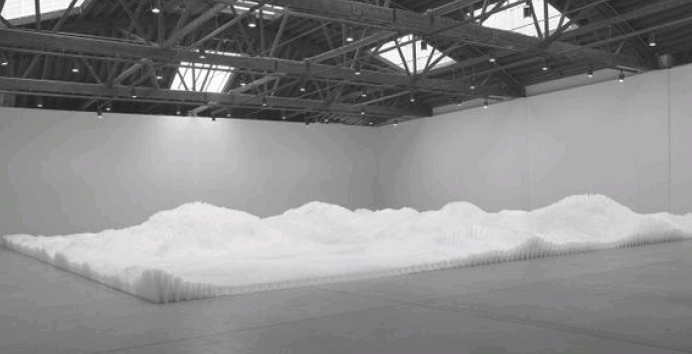FIGURE 13. Tara Donovan, Untitled (Plastic Cups) (2006), plastic cups, dimensions variable. A billowing cloud of plastic made of mundane cups. Donovan plays with the disorienting way in which the human ability to calculate scale evokes strange entities that exist as much as a single plastic cup, but that occupy a dimension that is less available (or wholly unavailable) to mundane human perception. Photograph by Ellen Labenski. Copyright Tara Donovan, courtesy of Pace Gallery. Reproduced by permission.
Tony Hayward was the CEO of BP at the time of the Deepwater Horizon oil pipe explosion, and his callousness made international headlines. Hayward said that the Gulf of Mexico was a huge body of water, and that the spill was tiny by comparison. Nature would absorb the industrial accident. I don’t want to quibble about the difference in size between the Gulf and the spill, as if an even larger spill would somehow have gotten it into Hayward’s thick head that it was bad news. I simply want to point out the metaphysics involved in Hayward’s assertion, which we could call capitalist essentialism. The essence of reality is capital and Nature. Both exist in an ethereal beyond. Over here, where we live, is an oil spill. But don’t worry. The beyond will take care of it.
Meanwhile, despite Nature, despite grey goo, real things writhe and smack into one another. Some leap out because industry malfunctions, or functions only too well. Oil bursts out of its ancient sinkhole and floods the Gulf of Mexico. Gamma rays shoot out of plutonium for twenty-four thousand years. Hurricanes congeal out of massive storm systems, fed by the heat from the burning of fossil fuels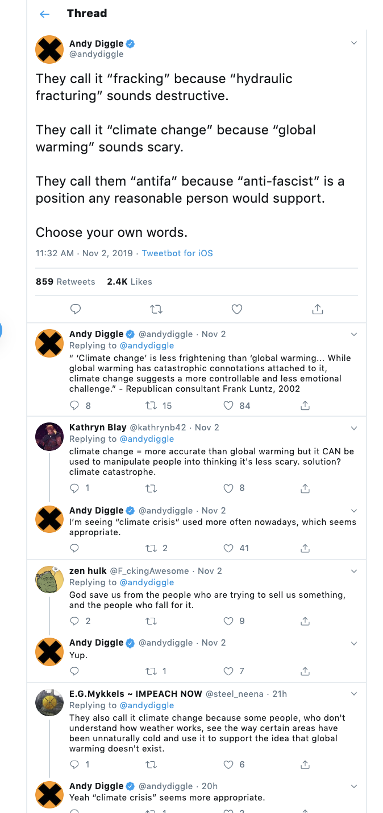 . The ocean of telephone dials mounts ever higher. Paradoxically, capitalism has unleashed myriad objects upon us, in their manifold horror and sparkling splendor. Two hundred years of idealism, two hundred years of seeing humans at the center of existence, and now the objects take revenge, terrifyingly huge, ancient, long-lived, threateningly minute, invading every cell in our body. When we flush the toilet, we imagine that the U-bend takes the waste away into some ontologically alien realm.21 Ecology is now beginning to tell us about something very different: a flattened world without ontological U-bends. A world in which there is no “away.” Marx was partly wrong, then, when in The Communist Manifesto he claimed that in capitalism all that is solid melts into air. He didn’t see how a hypersolidity oozes back into the emptied-out space of capitalism. This oozing real can no longer be ignored, so that even when the spill is supposedly “gone and forgotten,” there it is, mile upon mile of strands of oil just below the surface, square mile upon square mile of ooze floating at the bottom of the ocean.22 It can’t be gone and forgotten—even ABC News knows that now. When I hear the word “sustainability” I reach for my sunscreen.
The deep reason for why sustainability fails as a concept has to do with how we are not living in a world. It is thus time to question the very term ecology, since ecology is the thinking of home, and hence world (oikos plus logos). In a reality without a home, without world, what this study calls objects are what constitute reality. Objects are unique. Objects can’t be reduced to smaller objects or dissolved upward into larger ones. Objects are withdrawn from one another and from themselves. Objects are Tardis-like, larger on the inside than they are on the outside. Objects are uncanny. Objects compose an untotalizable nonwhole set that defies holism and reductionism. There is thus no top object that gives all objects value and meaning, and no bottom object to which they can be reduced. If there is no top object and no bottom object, it means that we have a very strange situation in which there are more parts than there are wholes.23 This makes holism of any kind totally impossible.
Even if you bracket off a vast amount of reality, you will find that there is no top and bottom object in the small section you’ve demarcated. Even if you select only a sector of reality to study somewhere in the middle, like they do in ecological science (the mesocosm), you will also find no top or bottom object, even as it pertains to that sector alone. It’s like a magnet. If you cut it, the two halves still have a north and a south pole. There is no such thing as “half” a magnet versus a “whole” one. Why is holism such a bad idea? Surely there could be other possible holisms that adopt some version of both–and thinking so that neither the parts nor the whole—whatever the whole might be— are greater. Perhaps the parts are not necessarily lesser than the whole but exist in some both–and synergistic fashion; you could have—simultaneously—“withdrawn” objects and something else (just to satisfy our modern need for things that aren’t static, let’s say an open-ended, possibly alwaysexpanding, something else).
First, we must walk through some semirelated points about this line of questioning. It sounds like good value to have “both–and” rather than “either–or,” to our somewhat consumerist minds (“buy one get one free”). But I’m afraid this is a case of either–or: holism or not. The parts are not replaceable components of the whole. The more we open up the Russian doll of an object, the more objects we find inside. Far more than the first object in the series, because all the relations between the objects and within them also count as objects. It’s what Lacanians call a not-all set. Objects in this sense are fundamentally not subject to phallogocentric rule. (Commercial break: If you’re having trouble with “object” at this point, why not try another term, such as “entity”?) What we encounter in OOO, which I have been expounding in these last couple of pages, is a Badiou-like set theory in which any number of affiliations between objects can be drawn. The contents of these sorts of sets are bigger than the container.
Sometimes children’s books explore deep ontological issues. The title of A House Is a House for Me couldn’t be better for a book about ecology (see my observation above about oikos and logos). The text is a wonderfully jumbly plethora of objects:
Cartons are houses for crackers,
Castles are houses for kings.
The more that I think about houses,
The more things are houses for things.
Home, oikos, is unstable. Who knows where it stops and starts? The poem presents us with an increasingly dizzying array of objects. They can act as homes for other objects. And of course, in turn, these homes can find themselves on the inside of other “homes.” “Home” is purely “sensual”: it has to do with how an object finds itself inevitably on the inside of some other object. The instability of oikos, and thus of ecology itself, has to do with this feature of objects. A “house” is the way an object experiences the entity in whose interior it finds itself. So then these sorts of things are also houses:
A mirror’s a house for reflections…
A throat is a house for a hum…
…A
book is a house for a story.
A rose is a house for a smell.
My head is a house for a secret,
A secret I never will tell.
A flower’s at home in a garden
A donkey’s at home in a stall.
Each creature that’s known has a house of its own
And the earth is a house for us all.
The time of hyperobjects is the time during which we discover ourselves on the inside of some big objects (bigger than us, that is): Earth, global warming, evolution. Again, that’s what the eco in ecology originally means: oikos, home. The last two lines of A House Is a House for Me make this very clear. To display the poem’s effortless brio, a lot of silly, fun “houses” are presented in the penultimate section as we hurry toward the conclusion, which then sets the record straight by talking about a “real” house, the Earth. But this is not the case. OOO doesn’t claim that any object is “more real” than any other. But it does discount some objects, which it calls sensual objects. What is a sensual object? A sensual object is an appearance-for another object. The table-for my pencil is a sensual object. The table-for my eyes is a sensual object. The table-for my dinner is a sensual object. Sensual objects are wonderfully, disturbingly entangled in one another. This is where causality happens, not in some mechanical basement. This is where the magical illusion of appearance happens. A mirror’s a house for reflections. Yes, the mesh (the interrelatedness of everything) is a sensual object! Strange strangers are the real objects! Some very important entities that environmentalism thinks of as real, such as Nature, are also sensual objects. They appear “as” what they are for an experiencer or user or apprehender. They are manifestations of what Harman calls the as-structure.26 They are asstructured even though they appear to be some deep background to (human) events.
This confusion of sensual and real, in the terms of A House Is House for Me, is like thinking that bread really is a house for jam, and jam alone. Rather than simply an idea that occurs to me, and perhaps to the jam, when it finds itself slathered in there. Marmalade wants in on the bread? Too bad, marmalade is an artificial, unnatural parasite! Peanut butter? Illegal alien! Only jam is “natural,” such that bread is only made-for-jam. See the problem with Nature? In OOO-ese, reification is precisely the reduction of a real object to its sensual appearance-for another object. Reification is the reduction of one entity to another’s fantasy about it.
Nature is a reification in this sense. That’s why we need ecology without Nature. Maybe if we turn Nature into something more fluid, it would work. Emergence is also a sensual object. And thus it’s in danger of doing the work of reifying—strangely enough, given its reputation as an unreified, flowy thing, despite its popularity as a replacement for terms such as nature. Emergence is always emergence-for. Yet there is a deeper way to think emergence. Physis, emergence, sway, the way a flower unfurls, seeming, upsurge of Being, are some of the terms Heidegger uses to characterize what he considers to be the primary notion of the ancient Greek philosophers. There is an appearingto, an emerging-for, going on. Being is not separated from seeming, at the most fundamental stage of Heidegger’s account. And so there is no reason why a poem can’t be construed as a physical object in as rich a sense as you like. It’s only counterintuitive if you think that entities come with two floors: basement mechanics and a pretty living room on top. But for OOO, Heidegger’s terms for being are simply elaborations on the as-structure. Whether you call it emergence or appearance, what we are talking about is a sensual object.
Thinking on a planetary scale means waking up inside an object, or rather a series of “objects wrapped in objects”: Earth, the biosphere, climate, global warming.27 Ecological being-with does not mean dusting some corner of an object so one doesn’t feel too dirty. Ecological being-with has to do with acknowledging a radical uniqueness and withdrawal of things, not some vague sludge of apeiron (using Anaximander’s term for “the limitless”). A circle, not an endless line, is a better emblem for the constraint, yet openness, of things.28 Indeed, the vague sludge is precisely the problem of pollution. Process relationism is simply the last philosophical reflex of the modernity that creates the sludge. We need a philosophy of sparkling unicities; quantized units that are irreducible to their parts or to some larger whole; sharp, specific units that are not dependent on an observer to make them real. These are considerations concerning the normative value of different ontologies. But there is a deeper reason why hyperobjects are best seen not as processes, but as real entities in their own right. Seen from a suitably high dimension, a process just is a static object. I would appear like a strange worm with a cradle at one end and a grave at the other, in the eyes of a four-dimensional being. This is not to see things sub specie aeternitatis, but as I argued previously, sub specie majoris: from a slightly higher-dimensional perspective. Processes are sophisticated from a lower-dimensional viewpoint. If we truly want to transcend anthropocentrism, this might not be the way to go. To think some things as processes is ironically to reify them as much as the enemy of the process philosopher supposedly sees things as static lumps. As static lumps go, Lorenz Attractors are pretty cool. Processes are equally reifications of real entities. A process is a sensual translation, a parody of a higher-dimensional object by a lower-dimensional being. A hyperobject is like a city—indeed a city such as London could provide a good example of a hyperobject. Cities and hyperobjects are full of strange streets, abandoned entrances, cul-de-sacs, and hidden interstitial regions.
The Nuclear Guardianship movement advocates an approach to nuclear materials that is strikingly similar to the way in which the electrostatic building simply accumulates dirt without shunting it under the rug.29 There is no away to which we can meaningfully sweep the radioactive dust. Nowhere is far enough or long-lasting enough. What must happen instead is that we must care consciously for nuclear materials, which means keeping them above ground in monitored retrievable storage until they are no longer radioactive. Remember that the half-life of plutonium-239 is 24,100 years. That’s almost as long into the future as the Chauvet Cave paintings are in our past. The future of plutonium exerts a causal influence on the present, casting its shadow backward through time. All kinds of options are no longer thinkable without a deliberate concealment of the reality of radioactive objects. Far, far more effort must be put into monitored retrievable storage than Thomas Sebeok’s disturbing idea of an “atomic priesthood” that enforces ignorance about the hyperobject in question.30 The documentary Into Eternity explores the immense challenge that the now immense heap of nuclear materials on Earth pose to thinking and to democracy.31 The film is narrated for a far future addressee, displacing the spurious now, which we habitually think as a point or a small, rigid bubble.
Guardianship, care—to curate is to care for. We are the curators of a gigantic museum of non-art in which we have found ourselves, a spontaneous museum of hyperobjects. The very nature of democracy and society—Whom does it contain? Only humans? Whom, if any, can it exclude?—is thrown into question. The atomic priesthood would prevent others from knowing the truth.32 The attempt to care for hyperobjects and for their distant future guardians will strikingly change how humans think about themselves and their relationships with nonhumans. This change will be a symptom of a gradually emerging ecological theory and practice that includes social policy, ethics, spirituality, and art, as well as science. Humans become, in Heidegger’s words, the guardians of futurality, “the stillness of the passing of the last god.”33 Nuclear Guardianship has suggested encasing plutonium in gold, that precious object of global reverence and lust, rather than sweeping it away out of view. Encased in gold, which has the advantage of absorbing gamma rays, plutonium could become an object of contemplation. Set free from use, plutonium becomes a member of a democracy expanded beyond the human. Nature as such is a byproduct of automation. By embracing the hyperobjects that loom into our social space, and dropping Nature, world, and so on, we have a chance to create more democratic modes of coexistence between humans and with nonhumans. But these modes are not discernible within traditional Western parameters, since future generations—and further futures than that, are now included on “this” side of any ethical or political decision.34
Nuclear Guardianship sees nuclear materials as a unit: a hyperobject. This vision summons into human fields of thinking and action something that is already there. The summoning is to nuclear materials to join humans in social space, rather than remain on the outside. Or better, it’s an acknowledgment by humans that nuclear materials are already occupying social space. It’s an intrinsically scary thought. But wishing not to think it is just postponing the inevitable. To wish this thought away is tantamount to the cleanup operations that simply sweep the contaminated dust, garbage, and equipment away to some less politically powerful constituency. As a member of society, nuclear materials are a unit, a quantum that is not reducible to its parts or reducible upward into some greater whole. Nuclear materials constitute a unicity: finitude means just this. Nuclear materials may present us with a very large finitude, but not an infinitude. They simply explode what we mean by finitude. They are not objective lumps limited in time and space, but unique beings.35 They have everything that Heidegger argues is unique to Dasein. Hyperobjects are futural, as the section “Interobjectivity” demonstrated. They scoop out the objectified now of the present moment into a shifting uncertainty. Hyperobjects loom into human time like the lengthening shadow of a tree across the garden lawn in the bright sunshine of an ending afternoon. The end of the world is not a sudden punctuation point, but rather it is a matter of deep time. Twenty-four thousand years into the future, no one will be meaningfully related to me. Yet everything will be influenced by the tiniest decisions I make right now.36 Inside the hyperobject nuclear radiation, I am like a prisoner, and a future person is like another prisoner. We are kept strictly apart, yet I guess his existence. There is a rumor going around the prison. If I make a deal with the police and pin the blame for my crime on the other prisoner, and he says nothing, I can go free and he receives a longer sentence. However, if I say nothing and he says nothing together, we both get a minor sentence. Yet if we both betray the other, we receive an even longer sentence. I can never be sure what the other will do. It would be optimal if I emphasize my self-interest above all other considerations. Yet it would be best if I act with a regard to the well-being of the other prisoner.
This is the Prisoner’s Dilemma. In 1984 Derek Parfit published the groundbreaking Reasons and Persons, a book that exploded long-held prejudices about utility and ethics from within utilitarianism itself. Parfit showed that no self-interest ethical theory, no matter how modified, can succeed against such dilemmas.37 Specifically Parfit has in mind hyperobjects, things such as pollution and nuclear radiation that will be around long after anyone meaningfully related to me exists. Since in turn my every smallest action affects the future at such a range, it is as if with every action I am making a move in a massive highly iterated Prisoner’s Dilemma game. We might as well rename it Jonah’s Dilemma or the Dilemma of the Interior of a Hyperobject. Default capitalist economics is rational choice theory, which is deeply a self-interest theory. Yet the Prisoner’s Dilemma indicates we’re profoundly social beings. Even self-interest accounts for the other somehow.
This is the Prisoner’s Dilemma. In 1984 Derek Parfit published the groundbreaking Reasons and Persons, a book that exploded long-held prejudices about utility and ethics from within utilitarianism itself. Parfit showed that no self-interest ethical theory, no matter how modified, can succeed against such dilemmas.37 Specifically Parfit has in mind hyperobjects, things such as pollution and nuclear radiation that will be around long after anyone meaningfully related to me exists. Since in turn my every smallest action affects the future at such a range, it is as if with every action I am making a move in a massive highly iterated Prisoner’s Dilemma game. We might as well rename it Jonah’s Dilemma or the Dilemma of the Interior of a Hyperobject. Default capitalist economics is rational choice theory, which is deeply a self-interest theory. Yet the Prisoner’s Dilemma indicates we’re profoundly social beings. Even self-interest accounts for the other somehow.
Parfit subjects an astonishing array of self-interest theories (variously modified to include relatives, friends, neighbors, descendants, and so on) to numerous tests based on the Prisoner’s Dilemma. The Prisoner’s Dilemma encourages one to think about how change begins: one thinks of the other, one brings the other into decisions that are supposedly about one’s self-interest. To this extent the Prisoner’s Dilemma is formally collectivist even though it lacks a positive collectivist or socialist content. The kinds of compromise necessitated by the Prisoner’s Dilemma may strike ideological purists as weak. It is precisely this weakness that makes the so-called compromises workable and just. Imagine a future self with interests so different from one’s own that to some extent she or he constitutes a different self: not your reincarnation or someone else—you yourself. This person in the future is like the prisoner being interrogated in the other room. The future self is thus unimaginably distant in one sense, and yet hyperobjects have brought her into the adjoining prison cell. She is strange yet intimate. The best course of action is to act with regard to her. This radical letting go of what constitutes a self has become necessary because of hyperobjects. The weakness of this ethical position is determined by the radical withdrawal of the future being: I can never fully experience, explain, or otherwise account for her, him, or it. The end of the world is a time of weakness.
The ethics that can handle hyperobjects is directed toward the unknown and unknowable future, the future that Jacques Derrida calls l’avenir.38 Not the future we can predict and manage, but an unknowable future, a genuinely future future. In the present moment, we must develop an ethics that addresses what Derrida calls l’arrivant, the absolutely unexpected and unexpectable arrival, or what I call the strange stranger, the stranger whose strangeness is forever strange—it cannot be tamed or rationalized away. This stranger is not so unfamiliar: uncanny familiarity is one of the strange stranger’s traits. Only consider anyone who has a long-term partner: the person they wake up with every day is the strangest person they know. The future future and the strange stranger are the weird and unpredictable entities that honest ecological thinking compels us to think about. When we can see that far into the future and that far around Earth, a curious blindness afflicts us, a blindness far more mysterious than simple lack of sight, since we can precisely see so much more than ever. This blindness is a symptom of an already-existing intimacy with all lifeforms, knowledge of which is now thrust on us whether we like it or not.
Parfit’s assault on utilitarian self-interest takes us to the point at which we realize that we are not separate from our world. Humans must learn to care for fatal substances that will outlast them and their descendants beyond any meaningful limit of self-interest. What we need is an ethics of the other, an ethics based on the proximity of the stranger. The decision in the 1990s, rapidly overturned, to squirrel plutonium away into knives and forks and other domestic objects appears monstrous, and so would any attempt to “work” it into something convenient. Hyperobjects insist that we care for them in the open. “Out of sight, out of mind” is strictly untenable. There is no “away” to throw plutonium in. We are stuck with it, in the same way as we are stuck with our biological bodies. Plutonium finds itself in the position of the “neighbor” in Abrahamic religions—that awkward condition of being alien and intimate at the very same time.
The enormity of very large finitude hollows out my decisions from the inside. Now every time I so much as change a confounded light bulb, I have to think about global warming. It is the end of the world, because I can see past the lip of the horizon of human worlding. Global warming reaches into “my world” and forces me to use LEDs instead of bulbs with filaments. This aspect of the Heideggerian legacy begins to teeter under the weight of the hyperobject. The normative defense of worlds looks wrongheaded.39 The ethical and political choices become much clearer and less divisive if we begin to think of pollution and global warming and radiation as effects of hyperobjects rather than as flows or processes that can be managed. These flows are often eventually shunted into some less powerful group’s backyard. The Native American tribe must deal with the radioactive waste. The African American family must deal with the toxic chemical runoff. The Nigerian village must deal with the oil slick. Rob Nixon calls this the slow violence of ecological oppression.40 It is helpful to think of global warming as something like an ultra slow motion nuclear bomb. The incremental effects are almost invisible, until an island disappears underwater. Poor people—who include most of us on Earth at this point—perceive the ecological emergency not as degrading an aesthetic picture such as world but as an accumulation of violence that nibbles at them directly.
Without a world, there are simply a number of unique beings (farmers, dogs, irises, pencils, LEDs, and so on) to whom I owe an obligation through the simple fact that existence is coexistence. I don’t have to run through my worlding checklist to ensure that the nonhuman in question counts as something I could care for. “If you answered mostly (A), then you have a world. If you answered mostly (B), then you are poor in world (German, weltarm). If you answered mostly (C), then you have no world whatsoever.” What remains without a world is intimacy. Levinas touches on it in his ethics of alterity, although he is incorrect to make this otherness as vague as the “rustling” of blank existence, the “there is” (il y a).41 The other is fully here, before I am, as Levinas argues. But the other has paws and sharp surfaces, the other is decorated with leaves, the other shines with starlight. Kafka writes:
At first glance it looks like a flat star-shaped spool for thread, and indeed it does seem to have thread wound upon it; to be sure, they are only old, broken-off bits of thread, knotted and tangled together, of the most varied sorts and colors. But it is not only a spool, for a small wooden crossbar sticks out of the middle of the star, and another small rod is joined to that at a right angle. By means of this latter rod on one side and one of the points of the star on the other, the whole thing can stand upright as if on two legs.42
“The idea that he is likely to survive me I find almost painful.”43 Kafka’s Odradek resembles the hyperobject in this respect. Indeed we have let him into our home somehow, like mercury and microwaves, like the ultraviolet rays of the sun. Odradek is what confronts us at the end of the world, not with a shout but with a breathless voice “like the rustling of fallen leaves.”44 Things appear in their disturbing weakness and lameness, technical terms describing the human attunement to hyperobjects that I have begun to elucidate. Without a world, there is no Nature. Without a world, there is no life. What exists outside the charmed circles of Nature and life is a charnel ground , a place of life and death, of death-in-life and life-in-death, an undead place of zombies, viroids, junk DNA, ghosts, silicates, cyanide, radiation, demonic forces, and pollution. My resistance to ecological awareness is a resistance to the charnel ground. It is the calling of the shaman to enter the charnel ground and to try to stay there, to pitch a tent there and live there, for as long as possible. Since there are no charnel grounds to speak of in the West, the best analogy, used by some Tibetan Buddhists (from whom the image derives), is the emergency room of a busy hospital. People are dying everywhere. There is blood and noise, equipment rushing around, screams. When the charm of world is dispelled, we find ourselves in the emergency room of ecological coexistence.
In the charnel ground, worlds can never take root. Charnel grounds are too vivid for that. Any soft focusing begins to look like violence. Haunting a charnel ground is a much better analogy for ecological coexistence than inhabiting a world. There is something immensely soothing about charnel grounds. It is what is soothing about Buddhism’s First Noble Truth, the truth of suffering. Traditionally, Buddhism recognizes three types of suffering. There is the pain of pain, as when you hit your thumb with a hammer, and then you close your whole hand in the door as you rush into the car to get to the doctor’s because of your thumb. Then there is the pain of alteration, in which you experience first plea-sure, then pain when pleasure evaporates. Then there is “all-pervasive pain,” which Chögyam Trungpa beautifully describes as a “fundamental creepy quality” akin to Heidegger’s description of Angst.45 It is this quality that comes close to the notion of world. All-pervasive pain has to do with the fixation and confusion that constitute the Six Realms of Existence (traditionally, animals, humans, gods, jealous gods, hungry ghosts, and hell). In paintings of the Wheel of Life, the Six Realms are held in the jaws of Yama, the Lord of Death.
It is this outermost perspective of the jaws of death that provides an entry point into the charnel ground. To a Buddhist, ecophenomenological arguments that base ethics on our embeddedness in a lifeworld begin to look like a perverse aestheticization, celebrations of confusion and suffering for confusion’s and suffering’s sake. It doesn’t really matter what is on the TV (murder, addiction, fear, lust). Each realm of existence is just a TV show taking up “space” in the wider space of the charnel ground of reality, “the desert of the real.”46 Trebbe Johnson and others have established the practice of Global Earth Exchanges, actions of finding, then giving something beautiful in a “wounded place,” such as a toxic dump or a nuclear power facility.47 Or consider Buddhist practitioners of tonglen: “sending and taking,” a meditation practice in which one breathes out compassion for the other, while breathing in her or his suffering. Tonglen is now used in the context of polluted places. Consider Chöd, the esoteric ritual of visualizing cutting oneself up as a feast for the demons, another practice that has been taken on with reference to ecological catastrophes. Or consider the priests at the Rocky Flats nuclear bomb trigger factory, such as walking meditation.
Our actions build up a karmic pattern that looks from a reified distance like a realm such as hell or heaven. But beyond the violence that we do, it’s the distance that reifies the pattern into a world picture that needs to be shattered. Whether it’s Hobbiton, or the jungles of Avatar, or the National Parks and conservation areas over yonder on the hither side of the screen (though possibly behind the windshield of an SUV), or the fields and irrigation channels on the hither side of the wilderness—it’s all a world picture. I’m not saying we need to uproot the trees—I’m saying that we need to smash the aestheticization: in case of ecological emergency, break glass.
Our increasing knowledge of global warming ends all kinds of ideas, but it creates other ones. The essence of these new ideas is the notion of coexistence—that is after all what ecology profoundly means. We coexist with human lifeforms, nonhuman lifeforms, and non-lifeforms, on the insides of a series of gigantic entities with whom we also coexist: the ecosystem, biosphere, climate, planet, Solar System. A multiple series of nested Russian dolls. Whales within whales within whales. Consider the hypothetical planet Tyche, far out in the Oort Cloud beyond Pluto. We can’t see it directly but we can detect evidence of its possible existence. Planets are hyperobjects in most senses. They have Gaussian geometry and measurable spacetime distortion because they are so massive. They affect everything that exists on and in them. They’re “everywhere and nowhere” up close (viscosity). (Point to Earth right now—you have a number of options of where to point.) They are really old and really huge compared with humans. And there’s something disturbing about the existence of a planet that far away, perhaps not even of “our” solar system originally, yet close enough to be uncanny (a very large finitude). And it’s unseen except for its hypothetical influence on objects such as comets: “The awful shadow of some unseen power,” in Shelley’s words. Tyche is a good name. It means contingency in Greek, so it’s the speculative realism planet par excellence. (“Luck” and “chance” are rather tame alternative translations. Tyche is what happens to you in a tragedy if your name is Oedipus.) And for now, what could be more obviously withdrawn? The historic moment at which hyperobjects become visible by humans has arrived. This visibility changes everything. Humans enter a new age of sincerity, which contains an intrinsic irony that is beyond the aestheticized, slightly plastic irony of the postmodern age. What do I mean?
This is a momentous era, at which we achieve what has sometimes been called ecological awareness. Ecological awareness is a detailed and increasing sense, in science and outside of it, of the innumerable interrelationships among lifeforms and between life and non-life. Now this awareness has some very strange properties. First of all, the awareness ends the idea that we are living in an environment! This is so bizarre that we should dwell on it a little. What it means is that the more we know about the interconnection, the more it becomes impossible to posit some entity existing beyond or behind the interrelated beings. When we look for the environment, what we find are discrete lifeforms, non-life, and their relationships. But no matter how hard we look, we won’t find a container in which they all fit; in particular we won’t find an umbrella that unifies them, such as world, environment, ecosystem, or even, astonishingly, Earth.
Suddenly we discover the second astonishing thing. Mice are surely mice no matter what we call them. But mice remain mice as long as they survive to pass on their genome—it’s what neo- Darwinism calls satisficing. Satisficing is a performative standard for existing. And there is no mouse-flavored DNA. There isn’t even any DNA-flavored DNA—it’s a palimpsest of mutations, viral code insertions, and so on. There isn’t even any life-flavored life. DNA requires ribosomes and ribosomes require DNA, so to break the vicious cycle, there must have been an RNA world of RNA attached to a nonorganic replicator, such as a silicate crystal. So there is a mouse—this is not a nominalist nor is it an idealist argument. But the mouse is a non-mouse, or what I call a strange stranger.48 Even more weirdly: this is why the mouse is real. The fact that wherever we look, we can’t find a mouse, is the very reason why she exists! Now we can say this about everything in the universe. But one of the most obvious things we can say this about is a hyperobject. Hyperobjects are so huge and so long-lasting, compared with humans, that they obviously seem both vivid and slightly unreal, for exactly the same reasons.
Suddenly we discover the second astonishing thing. Mice are surely mice no matter what we call them. But mice remain mice as long as they survive to pass on their genome—it’s what neo- Darwinism calls satisficing. Satisficing is a performative standard for existing. And there is no mouse-flavored DNA. There isn’t even any DNA-flavored DNA—it’s a palimpsest of mutations, viral code insertions, and so on. There isn’t even any life-flavored life. DNA requires ribosomes and ribosomes require DNA, so to break the vicious cycle, there must have been an RNA world of RNA attached to a nonorganic replicator, such as a silicate crystal. So there is a mouse—this is not a nominalist nor is it an idealist argument. But the mouse is a non-mouse, or what I call a strange stranger.48 Even more weirdly: this is why the mouse is real. The fact that wherever we look, we can’t find a mouse, is the very reason why she exists! Now we can say this about everything in the universe. But one of the most obvious things we can say this about is a hyperobject. Hyperobjects are so huge and so long-lasting, compared with humans, that they obviously seem both vivid and slightly unreal, for exactly the same reasons.
Hyperobjects such as global warming and nuclear radiation surround us, not some abstract entity such as Nature or environment or world. Our reality has become more real, in the sense of more vivid and intense, and yet it has also become less knowable as some one-sided, facile thing—again, for exactly the same reasons. In Berkeley, California, in early 2011, radiation levels in water spiked 181 times higher than normal because of the Sendai reactor meltdowns. We know this. We know we are bathed in alpha, beta, and gamma rays emanating from the dust particles that now span the globe. These particles coexist with us. They are not part of some enormous bowl called Nature; they are beings like us, strange strangers.
Should we stop drinking water? Should we stop drinking cow’s milk because cows eat grass, which drinks rainwater? The more we know, the harder it is to make a one-sided decision about anything. As we enter the time of hyperobjects, Nature disappears and all the modern certainties that seemed to accompany it. What remains is a vastly more complex situation that is uncanny and intimate at the same time.
There is no exit from this situation. Thus the time of hyperobjects is a time of sincerity: a time in which it is impossible to achieve a final distance toward the world. But for this very reason, it is also a time of irony. We realize that nonhuman entities exist that are incomparably more vast and powerful than we are, and that our reality is caught in them. What things are and how they seem, and how we know them, is full of gaps, yet vividly real. Real entities contain time and space, exhibiting nonlocal effects and other interobjective phenomena, writing us into their histories. Astonishingly, then, the mesh of interconnection is secondary to the strange stranger. The mesh is an emergent property of the things that coexist, and not the other way around. For the modernist mind, accustomed to systems and structures, this is an astounding, shocking discovery. The more maps we make, the more real things tear through them. Nonhuman entities emerge through our mapping, then they destroy them.
Coexistence is in our face: it is our face. We are made of nonhuman and nonsentient and nonliving entities. It’s not a cozy situation: it’s a spooky, uncanny situation. We find ourselves in what robotics and CGI designers call the uncanny valley (Figure 14). It’s a commonly known phenomenon in CGI design that if you build figures that look too much like humans, you are at risk of crossing a threshold and falling into the uncanny valley (Plate 2). In the uncanny valley, beings are strangely familiar and familiarly strange. The valley seems to explain racism quite well, because the dehumanization suffered by victims of racism makes them more uncanny to the racist than, say, a dog or a faceless robot. Hitler was very fond of his dog Blondi and yet dehumanized Jews and others. That’s the trouble with some kinds of environmentalist language: they skip blithely over the uncanny valley to shake hands with beings on the other side. But, as I’m going to argue, there is only another side if you are holding on to some fictional idea of humanness, an idea that ecological awareness actually refutes. The uncanny valley, in other words, is only a valley if you already have some quite racist assumptions about lifeforms.
With ecological awareness there is no “healthy person” on the other side of the valley. Everything in your world starts to slip into the uncanny valley, whose sides are infinite and slick. It’s more like an uncanny charnel ground, an ER full of living and dying and dead and newly born people, some of whom are humans, some of whom aren’t, some of whom are living, some of whom aren’t. Everything in your world starts to slip into this charnel ground situation, including your world.
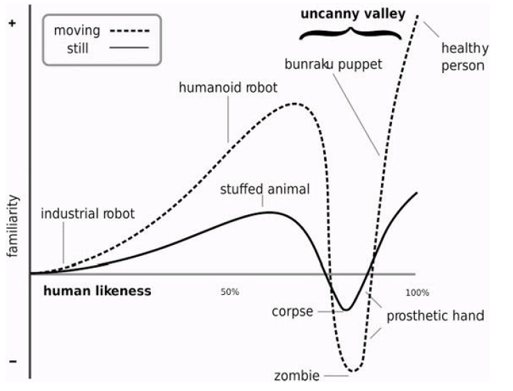FIGURE 14. Masahiro Mori’s diagram of the uncanny valley. Intimacy implies the grotesque. Since ecological awareness consists in a greater intimacy with a greater number of beings than modernity is capable of thinking, humans must pass through the uncanny valley as they begin to engage these beings. For reasons given in the book, this valley might be infinite in extent.
Isn’t it strange that we can admire comets, black holes, and suns—entities that would destroy us if they came within a few miles of us—and we can’t get a handle on global warming? Isn’t global climate now in the uncanny valley? Doesn’t this have something to do with art? Because when you look at the stars and imagine life on other planets, you are looking through the spherical glass screen of the atmosphere at objects that appear to be behind that glass screen—for all the developments since Ptolemy, in other words, you still imagine that we exist on the inside of some pristine glass sphere. The experience of cosmic wonder is an aesthetic experience, a three-dimensional surround version of looking at a picturesque painting in an art gallery. So Jane Taylor’s Romantic-period poem “The Star” is about seeing stars through the atmosphere, in which they seem to “Twinkle, twinkle.” Two and a half thousand people showed up at the University of Arizona in Tucson for a series of talks on cosmology.49 Evidently there is a thirst for thinking about the universe as a whole. Why is the same fascination not there for global warming? It’s because of the oppressive claustrophobic horror of actually being inside it. You can spectate “the universe” as an ersatz aesthetic object: you have the distance provided by the biosphere itself, which acts as a spherical cinema screen. Habit tells us that what’s displayed on that screen (like projections in a planetarium) is infinite, distant—the whole Kantian sublime. But inside the belly of the whale that is global warming, it’s oppressive and hot and there’s no “away” anymore. And it’s profoundly regressing: a toxic intrauterine experience, on top of which we must assume responsibility for it. And what neonatal or prenatal infant should be responsible for her mother’s existence? Global warming is in the uncanny valley, as far as hyperobjects go. Maybe a black hole, despite its terrifying horror, is so far away and so wondrous and so fatal (we would simply cease to exist anywhere near it) that we marvel at it, rather than try to avoid thinking about it or feel grief about it. The much smaller, much more immediately dangerous hole that we’re in (inside the hyperobject global warming) is profoundly disturbing, especially because we created it.